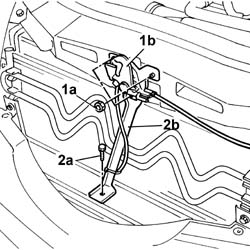
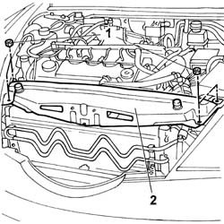
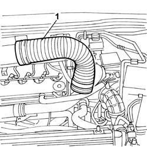
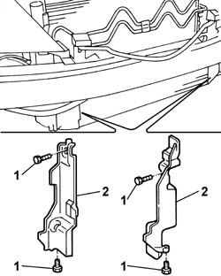
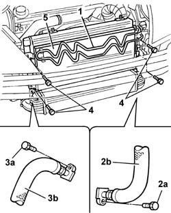

5040A40 Air conditioner CONDENSER - R.R.
- Path
- Procedures > 50 auxiliary units > 5040 AIR CONDITIONING CASING AND COMPONENTS > 5040A AIR CONDITIONING COOLING CIRCUIT > 5040A40 Air conditioner CONDENSER - R.R.
- Kind
- repair procedure (removal / refitting; the operation number is the code)
- Applies to
- all engines; all production periods
- Interactive page
- https://sloeber94.github.io/elrnDB-lThss/en/#/79161
Applies to: all engines; all production periods
 Removing
Removing
 Refitting
RefittingSee in Op. 7040D50 ENGINE COMPARTMENT UPPER SOUND INSULATION SHIELD - R.R.
See in Op. 5040A10 Air conditioning coolant circuit - Drying and Repressurizing
- Open the boot and disconnect the negative battery terminal.
See in Op. 7055B54 PROTECTION/GUARD under engine - R.R.
See in Op. 4450B12 Front WHEELS (two) - R.R.
See in Op. 7055B42 FRONT WHEEL ARCH LINER (one), left or right - R.R.
- (right side)
See in Op. 7055B64 Engine compartment DUST SEAL in front wheel arch (one), left or right - R.R.
- (right side)
See in Op. 7210E10 FRONT BUMPER
1. Undo the fixing nuts (1a) and remove the bonnet lock (1b) from the housing in the crossmember.
2. Undo the lower nut (2a) and remove the lock reinforcement bracket (2b).

Applies to: all engines; all production periods
1. Undo the retaining bolts.
2. Remove the upper front crossmember.

Applies to: all engines; all production periods
1. Remove the cold air intake from the connector on the air filter.

Applies to: engines: 2.4 JTD 10V; all production periods
Applies to: engines: 2.0 TB, 2.4 20V, 3.0 V6; all production periods
Applies to: engines: 2.4 JTD 20V; all production periods
See in Op. 1016A10 SOUND-PROOFING COVER - R.R.
See in Op. 1048B44 RIGID air supply PIPE from heat exchanger to intake manifold - R.R.
See in Op. 1048A56 UPPER RESONATOR - R.R.
See in Op. 1048A50 air inlet pipe to turbocharger - r + r
See in Op. 1048A21 AIR INLET HOSE FROM INTAKE TO FILTER - R.R.
Applies to: all engines; all production periods
1. Undo the retaining bolts.
2. Remove both right and left ducts on the radiator.

Applies to: all engines; all production periods
1. Move the power assisted steering system cooling coil away from the housing on the condenser.
2. Undo the bolts (2a) fixing the pipe from the drier filter to the condenser, condenser side and move the pipe (2b) aside.
3. Undo the bolt (3a) fixing the pipe from the compressor to the condenser (3b), condenser side and move the pipe aside.
4. Undo the bolts fixing the condenser to the radiator.
5. Remove the condenser from the housing.

Applies to: all engines; all production periods
Refitting
Removing- Fit the condenser on the radiator.
- Connect the pipe from the drier filter to the condenser, condenser side.
- Connect the pipe from the compressor filter to the condenser, condenser side.
- Reposition the power assisted steering system cooling coil.
Applies to: engines: 2.4 JTD 10V; all production periods
See in Op. 1048A10 COMPLETE AIR FILTER -R.R.
See in Op. 1048A48 HOSE BETWEEN RESONATOR AND THROTTLE CASING - R.R.
Applies to: engines: 2.0 TB, 2.4 20V, 3.0 V6; all production periods
See in Op. 1048A10 COMPLETE AIR FILTER -R.R.
See in Op. 1048A48 HOSE BETWEEN RESONATOR AND THROTTLE CASING - R.R.
Applies to: engines: 2.4 JTD 20V; all production periods
See in Op. 1048A10 COMPLETE AIR FILTER -R.R.
See in Op. 1048A21 AIR INLET HOSE FROM INTAKE TO FILTER - R.R.
See in Op. 1048A50 air inlet pipe to turbocharger - r + r
See in Op. 1048A56 UPPER RESONATOR - R.R.
See in Op. 1048B44 RIGID air supply PIPE from heat exchanger to intake manifold - R.R.
Applies to: all engines; all production periods
- Fit both right and left ducts in the seat on the radiator and tighten the bolts.
- Position the cold air intake on the connector on the air filter.
- Fit the upper front crossmember and tighten the fixing nuts to torque.
 | Value - daNm | Fastening | Component | Ø |
|---|---|---|---|---|
. | 0.6 | Bolts | FRONT WING CROSSMEMBER HEADLAMP HOUSINGS | M6 |
- Fit the bonnet lid lock complete with bracket and tighten the nuts fixing it to the upper crossmember and to the lower crossmember.
See in Op. 7210E10 FRONT BUMPER
See in Op. 7055B42 FRONT WHEEL ARCH LINER (one), left or right - R.R.
- (right side)
See in Op. 7055B64 Engine compartment DUST SEAL in front wheel arch (one), left or right - R.R.
- (right side)
See in Op. 4450B12 Front WHEELS (two) - R.R.
See in Op. 7055B54 PROTECTION/GUARD under engine - R.R.
- Connect the negative battery terminal.
See in Op. 5040A10 Air conditioning coolant circuit - Drying and Repressurizing
See in Op. 7040D50 ENGINE COMPARTMENT UPPER SOUND INSULATION SHIELD - R.R.
Topics linked from this page (15)
- 1016A10 SOUND-PROOFING COVER - R.R.
- 1048A56 UPPER RESONATOR - R.R.
- 1048A10 COMPLETE AIR FILTER -R.R.
- 1048A21 AIR INLET HOSE FROM INTAKE TO FILTER - R.R.
- 1048A28 vacuum air circuit resonator pipe - r+r
- 1048A50 air inlet pipe to turbocharger - r + r
- 1048A48 HOSE BETWEEN RESONATOR AND THROTTLE CASING - R.R.
- 1048B44 RIGID air supply PIPE from heat exchanger to intake manifold - R.R.
- 4450B12 Front WHEELS (two) - R.R.
- 5040A10 Air conditioning coolant circuit - Drying and Repressurizing
- 7040D50 ENGINE COMPARTMENT UPPER SOUND INSULATION SHIELD - R.R.
- 7055B42 FRONT WHEEL ARCH LINER (one), left or right - R.R.
- 7055B54 PROTECTION/GUARD under engine - R.R.
- 7055B64 Engine compartment DUST SEAL in front wheel arch (one), left or right - R.R.
- 7210E10 FRONT BUMPER